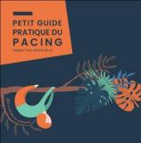

Accueil > Conseil scientifique
Le "pacing" ou comment adapter son rythme de vie et d'activité
Pour toute question sur le pacing : ASFCpacing
Le pacing : de quoi s'agit-il ?
vidéo
Il s'agit d'un ensemble d'outils et de pratiques pour adapter votre quotidien en fonction de votre niveau d'énergie disponible - Retrouvez-les dans le petit guide pratique du pacing conçu par l'ASFC.
Vous êtes adhérent.e à l'ASFC, le guide pratique du pacing vous sera envoyé gratuitement lors de votre adhésion ; vous pourrez également participer à des ateliers en petit groupe pour échanger sur vos pratiques du pacing et les améliorer ! Contactez nous !
Chronique RTL sur le pacing "Éviter le crash" : le "pacing" aide-t-il vraiment à gérer la fatigue chronique? (10/09/2026) : Visionner ou écouter la chronique
Le pacing permet de stabiliser la maladie et les principaux symptômes, et de réduire l'intensité et la fréquence des malaises post-effort caractéristiques de l'EM/SFC.
Vous ne savez pas si vous vivez ou non des malaises post-effort, référez-vous à la fiche du dr Alaa Ghali pour l'aide au repérage et à l'évaluation du MPE : Description et gestion du malaise post-effort
Le pacing est entré dans le VIDAL, cité comme traitement pour le syndrome post-covid ou Covid Long (mise à jour du 5 septembre 2025) : vidal pacing pour Covid long
Pour échanger sur les objets et astuces utiles dans le pacing :
Groupe de partage facebook Air&Go sur le " pacing" par Izaline, déléguée ASFC AURA
Suivez notre blog " tutos pacing " :
blog de l' ASFC sur le pacing : articles, témoignages, outils en pdf...
WEBINAIRES SUR LE PACING
Oser son rythme avec le pacing (Outils, témoignages, capitalisation) - 21 novembre 2021 (1ère édition de la Journée des Fatigues):
replay-première-partie
replay-deuxième partie (questions/réponses)
Maîtriser ses fatigues avec le pacing- webinaire de l'Afa Crohn RCH France - novembre 2023 Replay Maîtriser ses fatigues avec le pacing
Oser son rythme avec le pacing (Outils, témoignages, capitalisation) - 21 novembre 2021 (1ère édition de la Journée des Fatigues):
replay-première-partie
replay-deuxième partie (questions/réponses)
Maîtriser ses fatigues avec le pacing- webinaire de l'Afa Crohn RCH France - novembre 2023 Replay Maîtriser ses fatigues avec le pacing

Extrait : Editorial du PETIT GUIDE PRATIQUE DU PACING (version janvier 2023)
ÉDITO
Vous qui lirez ce guide êtes sans doute concerné par une fatigue intense, durable, par l'épuisement, bien au-delà de la fatigue naturelle que tout le monde connaît. Comment vivre avec une « dette d'énergie » permanente ?
Vous qui étiez très actif avant la maladie, vous vous posez mille questions.
Dois-je renoncer à tout ce que j'ai encore envie de faire ? Dois-je me reposer tout le temps ou bien dois-je me forcer quand je n'ai plus l'énergie pour faire ?
Vivre avec une Encéphalomyélite Myalgique (« EM », que vous connaissez peut-être sous le nom de « SFC », Syndrome de Fatigue Chronique, ou « EM/SFC »), c'est vivre avec une enveloppe d'énergie limitée et variable selon les jours. C'est aussi le quotidien de personnes touchées par un syndrome post-infectieux (à la suite de la COVID notamment) ou par d'autres maladies chroniques, du fait de la maladie elle-même, et/ou des traitements.
Le but de ce guide est de vous aider à adapter votre rythme de vie face à une énergie qui fait défaut, qui fluctue et qui limite vos activités.
Le concept de pacing - littéralement « adapter son rythme, son allure » - vient des sports d'endurance. Il y est utilisé pour atteindre des objectifs en contrôlant la fatigue. Le vôtre sera ne pas dépasser votre enveloppe d'énergie quotidienne.
Ce guide a été conçu par des malades de profils variés, qui ont mis en commun les savoirs issus de leur expérience, leurs tâtonnements, leurs échecs et leurs réussites.
Vous aussi, vous devrez sans doute expérimenter et tâtonner, car chaque cheminement avec une maladie chronique est singulier. Nous faisons toutefois le pari de vous faciliter la route, en traçant pour vous quelques chemins empruntés avec succès par d'autres.
Nous vous souhaitons de trouver votre propre zone d'équilibre.
L'équipe de l'ASFC
Le « pacing », c'est adapter son rythme de vie en fonction de l'enveloppe énergétique disponible au jour le jour. Cette stratégie diminuera la fréquence et l'intensité du malaise post-effort et permettra une expansion de l'enveloppe énergétique, et par conséquent une rémission de la maladie.
Dr A. Ghali
(interniste, CHU d'Angers)
L'ASFC remercie très vivement tous les malades co-auteurs ou contributeurs.
Vous qui lirez ce guide êtes sans doute concerné par une fatigue intense, durable, par l'épuisement, bien au-delà de la fatigue naturelle que tout le monde connaît. Comment vivre avec une « dette d'énergie » permanente ?
Vous qui étiez très actif avant la maladie, vous vous posez mille questions.
Dois-je renoncer à tout ce que j'ai encore envie de faire ? Dois-je me reposer tout le temps ou bien dois-je me forcer quand je n'ai plus l'énergie pour faire ?
Vivre avec une Encéphalomyélite Myalgique (« EM », que vous connaissez peut-être sous le nom de « SFC », Syndrome de Fatigue Chronique, ou « EM/SFC »), c'est vivre avec une enveloppe d'énergie limitée et variable selon les jours. C'est aussi le quotidien de personnes touchées par un syndrome post-infectieux (à la suite de la COVID notamment) ou par d'autres maladies chroniques, du fait de la maladie elle-même, et/ou des traitements.
Le but de ce guide est de vous aider à adapter votre rythme de vie face à une énergie qui fait défaut, qui fluctue et qui limite vos activités.
Le concept de pacing - littéralement « adapter son rythme, son allure » - vient des sports d'endurance. Il y est utilisé pour atteindre des objectifs en contrôlant la fatigue. Le vôtre sera ne pas dépasser votre enveloppe d'énergie quotidienne.
Ce guide a été conçu par des malades de profils variés, qui ont mis en commun les savoirs issus de leur expérience, leurs tâtonnements, leurs échecs et leurs réussites.
Vous aussi, vous devrez sans doute expérimenter et tâtonner, car chaque cheminement avec une maladie chronique est singulier. Nous faisons toutefois le pari de vous faciliter la route, en traçant pour vous quelques chemins empruntés avec succès par d'autres.
Nous vous souhaitons de trouver votre propre zone d'équilibre.
L'équipe de l'ASFC
Le « pacing », c'est adapter son rythme de vie en fonction de l'enveloppe énergétique disponible au jour le jour. Cette stratégie diminuera la fréquence et l'intensité du malaise post-effort et permettra une expansion de l'enveloppe énergétique, et par conséquent une rémission de la maladie.
Dr A. Ghali
(interniste, CHU d'Angers)
L'ASFC remercie très vivement tous les malades co-auteurs ou contributeurs.
COMMENT SE PROCURER LE PETIT GUIDE PRATIQUE DU PACING ?
Ce guide pratique est adressé gratuitement et systématiquement à tout nouvel adhérent.
POUR LES PARTICULIERS
Si vous n'êtes pas adhérent ou si vous souhaitez un livret supplémentaire en tant qu'adhérent, vous pouvez le commander en ligne.
S'il s'agit du 1er exemplaire commandé, il est gratuit et vous n'aurez à payer que les frais d'envoi (4 euros pour envoi en France, 5 euros pour envoi à l'international).
Au delà du 1er exemplaire, il vous sera demandé de régler 1,50 euros (prix coûtant) + les frais de port.
Je commande le livret pacing en tant que particulier : COMMANDER
POUR LES ASSOCIATIONS ET PROFESSIONNELS DE SANTE intéressés par le petit guide du pacing, des tarifs spécifiques vous sont proposés.
Je commande le livret pacing en tant que professionnel de santé ou association : COMMANDER
Ce guide pratique est adressé gratuitement et systématiquement à tout nouvel adhérent.
POUR LES PARTICULIERS
Si vous n'êtes pas adhérent ou si vous souhaitez un livret supplémentaire en tant qu'adhérent, vous pouvez le commander en ligne.
S'il s'agit du 1er exemplaire commandé, il est gratuit et vous n'aurez à payer que les frais d'envoi (4 euros pour envoi en France, 5 euros pour envoi à l'international).
Au delà du 1er exemplaire, il vous sera demandé de régler 1,50 euros (prix coûtant) + les frais de port.
Je commande le livret pacing en tant que particulier : COMMANDER
POUR LES ASSOCIATIONS ET PROFESSIONNELS DE SANTE intéressés par le petit guide du pacing, des tarifs spécifiques vous sont proposés.
Je commande le livret pacing en tant que professionnel de santé ou association : COMMANDER
PUBLICATIONS INTERNATIONALES SUR LES EFFETS DU PACING
Ghali, A., Lacombe, V., Ravaiau, C., Delattre, E., Ghali, M., Urbanski, G., & Lavigne, C. (2023). The relevance of pacing strategies in managing symptoms of post-COVID-19 syndrome. Journal of translational medicine, 21(1), 375. https://doi.org/10.1186/s12967-023-04229-w
Publication du Dr Ghali
Sanal-Hayes, N.E.M., Mclaughlin, M., Hayes, L.D. et al. A scoping review of ‘Pacing' for management of Myalgic Encephalomyelitis/Chronic Fatigue Syndrome (ME/CFS): lessons learned for the long COVID pandemic. J Transl Med 21, 720 (2023). https://doi.org/10.1186/s12967-023-04587-5
Revue de synthèse sur le pacing dans l'EM/SFC et le Covid Long
Barakou, I., Hackett, K. L., Finch, T., & Hettinga, F. J. (2023). Self-regulation of effort for a better health-related quality of life: a multidimensional activity pacing model for chronic pain and fatigue management. Annals of medicine, 55(2), 2270688. https://doi.org/10.1080/07853890.2023.2270688
L'auto-régulation de l'activité pour une meilleure qualité de vie
Casson, S., Jones, M. D., Cassar, J., Kwai, N., Lloyd, A. R., Barry, B. K., & Sandler, C. X. (2022). The effectiveness of activity pacing interventions for people with chronic fatigue syndrome: a systematic review and meta-analysis. Disability and rehabilitation, 1–15. Advance online publication. https://doi.org/10.1080/09638288.2022.2135776
Revue de synthèse sur le pacing dans l'EM/SFC
LE MALAISE POST-EFFORT ou EXACERBATION POST-EFFORT DES SYMPTOMES et COMMENT LE PREVENIR
Description et gestion du malaise post-effort
ARTICLE DE FRANCE ASSOS SANTE SUR LE PACING
Lire l'article
ECHELLES DE CAPACITE ET DE SEVERITE DE l'EM/SFC
Copyright Jodid Basset (2005) pour la HFME Hummingbird's Foundation for ME (Australie)
Voir les échelles
Echelle en 3 parties :
Partie 1. Echelle de capacité physique EM/SFC
Partie 2. Echelle de capacité cognitive EM/SFC
Partie 3. Echelle sévérité des symptômes EM/SFC
APPLICATIONS DE PACING SUR SMARTPHONE
Appli ME/CFS Pacing, de l'association EMERGE (Australie) : Cette application est conçue pour aider les personnes atteintes d'EM / SFC légère à modérée à mieux gérer leur consommation d'énergie quotidienne afin d'améliorer leur qualité de vie. en savoir plus - site de EMERGE
COMMUNIQUE DE PRESSE DE L'ASFC SUR LA GESTION POST-COVID
Que faire lorsque la fatigue se prolonge sur plusieurs mois ?
Communiqué de l' ASFC sur la gestion de la fatigue post-covid 06.2020
Echelle d'évaluation de la sévérité de l'EM/SFC : (Bell D. (1994) The doctor's guide to chronic fatigue syndrome: understanding, treating, and living with CFIDS, David Bell - Addison-Wesley Pub. Co.
Echelle de Bell traduction française ASFC
Echelle d'évaluation de la sévérité de Bell, version illustrée (C) Dévoiler l'Invisible : Bell version illustrée
Qui sommes-nous ?
Pacing
Le SFC, la maladie
La douleur chronique
Adhésion & Contact
Faire un don
Accueil téléphonique
Accueil en régions
Documentation
Démarches administ.
Agenda

- inserm.fr/actualites/ru
- alliance-maladies-rares
- eurordis.org
- orpha.net/consor/cgi-bi
- maladiesraresinfo.org
- plateforme-maladiesrare
- has-sante.fr
- fnath.org
- france-assos-sante.org/
- sfr.larhumatologie.fr
- hemochromatose.fr
- association-afvd.com/
- afgs-syndromes-secs.org
- droitsdesmalades.fr/
- sante.gouv.fr
- phoenixrising.me
- investinme.org
- iacfsme.org/
- solvecfs.org/
- meassociation.org.uk/
- https://aqem.org
 Ce site respecte les
principes de la charte HONcode.
Ce site respecte les
principes de la charte HONcode.
Vérifiez ici.
Dernière mise à jour le 10/09/2026
Copyright ASFC ©2012-2026 mentions légales - Réalisé par OPALE WEB - OPALIS'TIC